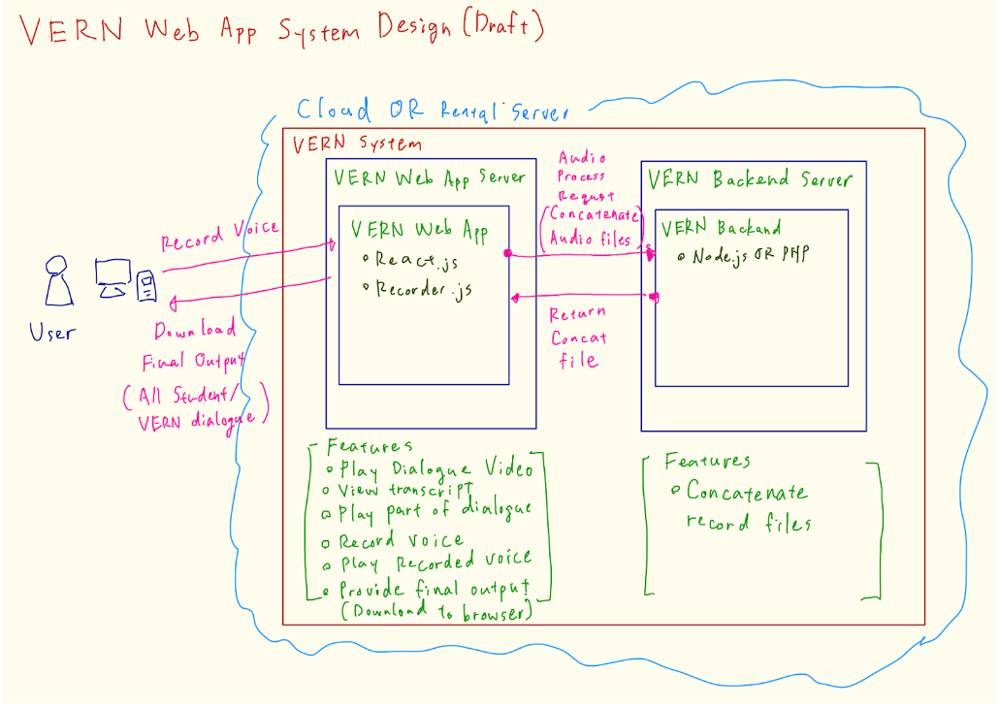
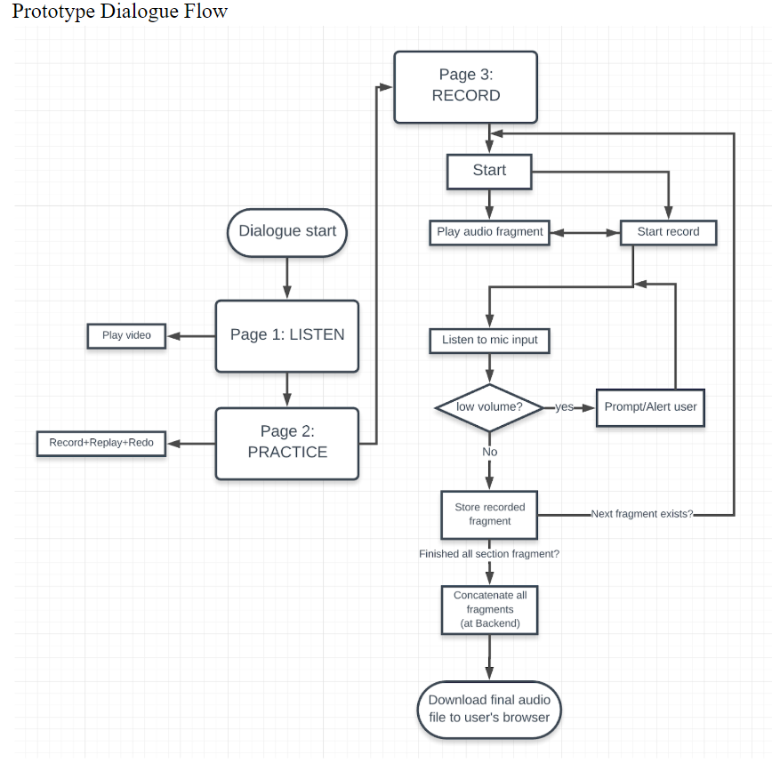

Who Am I?
CST student of British Columbia Institute of Technology, I recently
graduated Data Communications and Internet-working. Throughout my
studies, I had the opportunity to work with and learn from many
great people.
I am excited to learn new technology and
further develop my skills as I continue to explore the world of
technology. I drive to improve myself everyday so I can confidently
say I am a software developer.
Aside from programming, I
am a passionate self-taught cook who loves to try new recipes from
all over the world. I constantly want to improve and refine my
palate. I also enjoy sports and play badminton weekly with friends.
Projects
Type of Project: (Practicum)
Fullstack project for a client
Technology Used:
• React.js • Recorder.js • Node.js • Express.js • Amazon AWS EC2 • ffmpeg
Project Length:
4 Months
Developers: (4)
• 2 Back-end Developer • 1 Front-end Developer • 1 Team Lead/Project Manager
Project Description:
TalkToVern is a business idea Loredana Bruni and Scott Carroll
thought of and enlisted the help of students to design and
create a web application to record user response to voice lines
and upload it. The usser has the ability to replay their audio
before uploading and download their uploaded work afterwards.
The project was designed and created from the ground up with the
help of a professor to guide us.
The final product delivered took over
800 hours of design work, development, testing
and deployment from me and my team.
Project Design:
 Type of Project: (Course Final Project)
Web Develop Final Project (Core Application)
Technology Used:
• Django • Django Templates • React.js • JQuery • MariaDB • Mailgun • Heroku
Project Length:
2 Months
Number of Developers: (8)
• 6 Fullstack Developer • 2 Team Lead/Project ManagerProject Description:
The project was split into two separate web application. We had
a team of 4 work on the core app and another team of 4 work on
the external app.
The external app can be anything. We decided to make an online
tank game that keeps track of user scores and has a leader
board.
For the core app, we are required to design and create a social
media profile where users must register with an email with the
option to change or recover forgotten password. Once signed in,
the user can upload/change their profile image, update their
name, update/add a bio and display "badges" which are earned
from the external app. Additionally, the user can search for
other users of the applications and add filters to search based
on badges, within the bio and/or name.
The core app must have an API key from the external apps to
communication via API calls. The badge are achievements for
using the external app. All the data must be store in a
database. The site MUST be responsive and
secured.